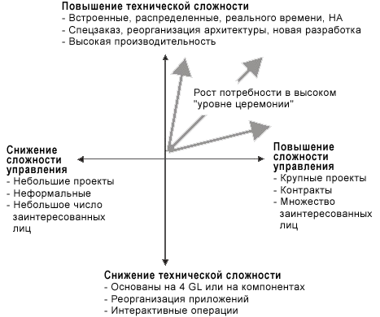

| Введение в RUP |
|
Что такое Rational Unified Process, или RUP?Сущность RUPПо существу, Rational Unified Process® (RUP®) предназначен для успешной разработки программного обеспечения. Существует три основных элемента, определяющих RUP:
Платформа Rational Method Composer (RMC)На протяжении многих лет разработки RUP развилась в имеющую широкие возможности платформу разработки процесса - Rational Method Composer (RMC). С помощью RMC рабочие группы могут определять, настраивать, адаптировать и осуществлять на практике согласованный процесс. Ключевыми элементами платформы являются:
Кому следует использовать RUP?Если необходимо обеспечить возможность разработки и развертывания программного обеспечения, важного для успешной работы вашей организации, то в этом вам поможет RUP. Разработка продукта RUP была нацелена на две основных группы пользователей:
Для практиков-разработчиков программного обеспечения представлены рекомендации по тому, что от них требуется с точки зрения ролей, определенных в RUP. Практику, работающему над проектом по разработке программного обеспечения в RUP, присваивается одна или несколько ролей, определенных в RUP, где каждая роль выделяет набор задач и рабочих продуктов, за которые эта роль отвечает. Также дается руководство по совместной работе этих ролей с точки зрения деятельностей, которые требуются для введения настроенного процесса (который называется процесс доставки). Для практиков-разработчиков процессов представлено руководство по определению, настройке, адаптации и реализации процессов разработки. Семейство продуктов RUP предоставляет ряд инструментов, облегчающих определение, настройку и адаптацию процесса разработки. Вместе с продуктом RUP предоставляется ряд представлений, которые предназначены для различных групп разработчиков программного обеспечения. Настройка RUP для данного проекта.Одним из ключевых принципов RUP является итерационная и инкрементальная разработка. Этот принцип также следует иметь в виду перед началом работы с RUP: не пытайтесь "выполнить" весь RUP сразу. Усвойте подход креализации, изучению и применению RUP, который сам по себе является итерационным и инкрементальным. Начните с оценки существующего процесса и выбора одной или двух ключевых областей, которые вы хотели бы улучшить. Сначала используйте RUP для улучшения этих областей, а затем, в более поздних итерациях или циклах разработки, вносите дополнительные улучшения в других областях. Для получения более подробной информации по этим разделам используйте следующие ссылки:
///Почему следует использовать RUP?RUP предоставляет разработчику программного обеспечения основанную на стандартах настраиваемую среду процесса. Эта среда:
По своей сути RUP является собранием большого количества методов проектирования программного обеспечения, которые постоянно совершенствуются для отражения изменений в отрасли. Как заинтересованному лицу в проекте разработки программного обеспечения, RUP обеспечивает вас пониманием того, что следует ожидать от процесса разработки. Предоставляется глоссарий терминов и энциклопедия знаний, которые помогут вам эффективно общаться с коллективом разработчиков программного обеспечения. Для разработчика программного обеспечения эта среда процесса предоставляет основное общее определение процесса, которое может совместно использоваться всеми участниками коллектива по разработке программного обеспечения, что гарантирует четкую и однозначную связь между членами коллектива. Это поможет вам играть в коллективе ожидаемую от вас роль, четко определяя вашу ответственность. В качестве общего справочника по разработке программного обеспечения RUP обеспечивает обширный материал с рекомендациями по разработке программного обеспечения, который может представлять ценность и для новичков, и для опытных разработчиков. Даже если вы работаете самостоятельно, а не в составе коллектива, RUP будет полезен при разработке программного обеспечения мирового уровня. Менеджерам и руководителям коллективов RUP предоставляет процесс, посредством которого можно эффективно общаться с персоналом и соответственно управлять его работой и контролировать ее. Инженерам процесса RUP обеспечивает основу архитектуры и обширный материал, из которого можно сконструировать определение процесса, что позволяет настраивать и расширять эту основу. Это позволяет сохранить много времени и усилий, которые потребовались бы при создании такого определения процесса с нуля. Когда следует использовать RUP? RUP можно использовать с самого начала нового проекта по созданию программного обеспечения и далее применять в последующих циклах разработки после завершения начального проекта. Однако способ использования RUP необходимо варьировать в соответствии с вашими потребностями. Существует несколько условий, которые определяют, когда и как следует использовать различные части RUP:
Где можно получить дополнительные сведения о RUP?Следующие ресурсы могут помочь вам начать работу с RUP:
|
© Copyright IBM Corp. 1987, 2006. Все права защищены.. |